Blob
Web Design
2021
scroll down
keyboard_arrow_downBlob is an intuitive and comprehensive tracking app aimed at managing personal and academic projects, making use of useful tools that allow you to take notes, draw, storage images, structure tasks and view your progress in various projects at hand. Our objective is to facilitate and enhance the work process of creative professionals and students.
In collaboration with Ana Isabel Teixeira and Rita Faria.
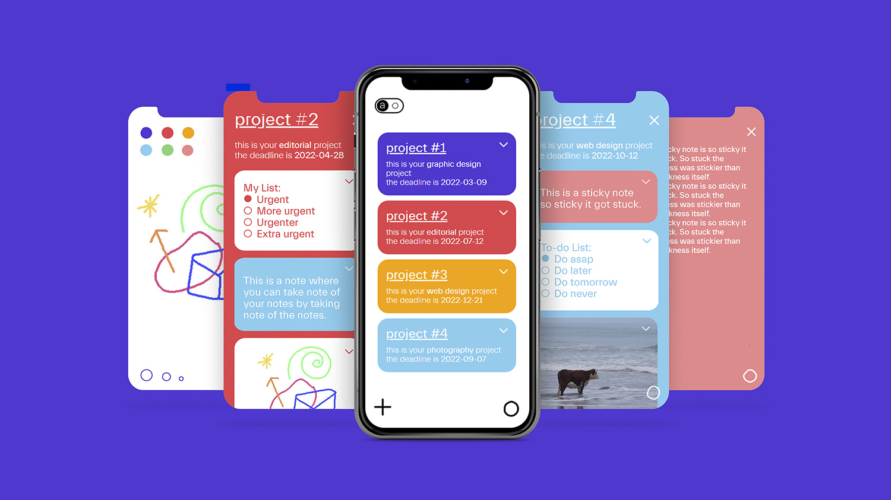 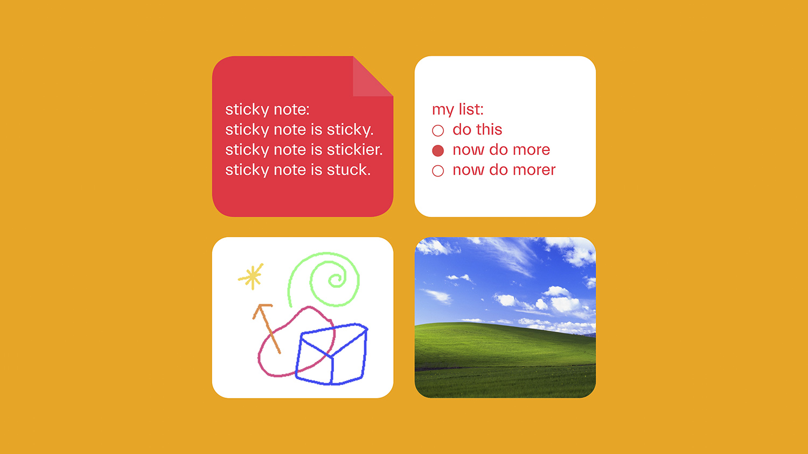 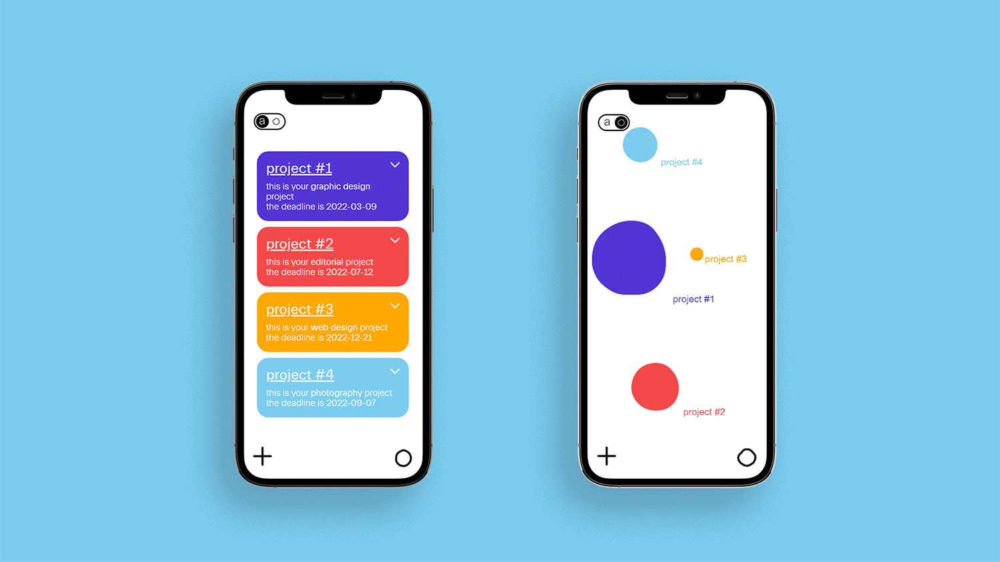 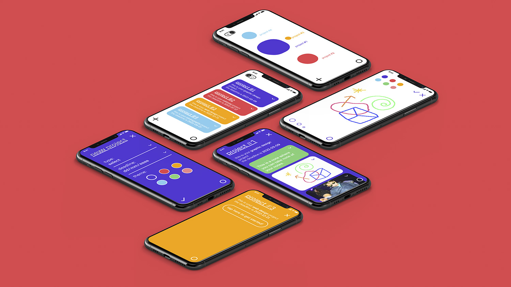 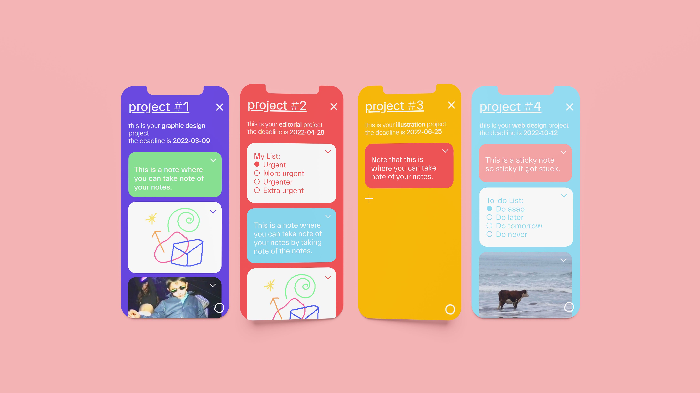 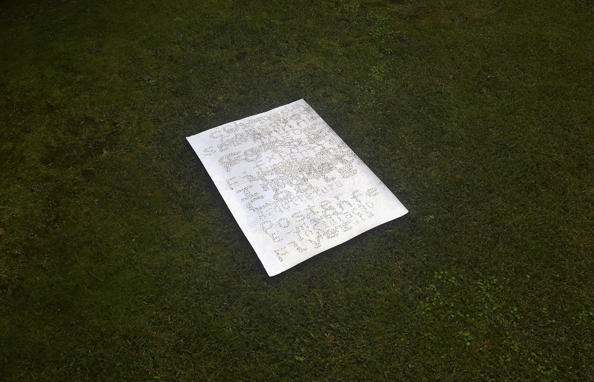
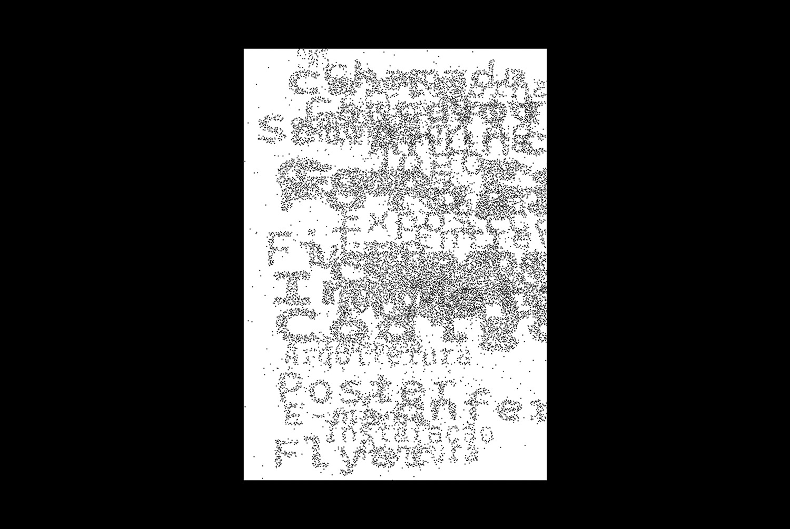
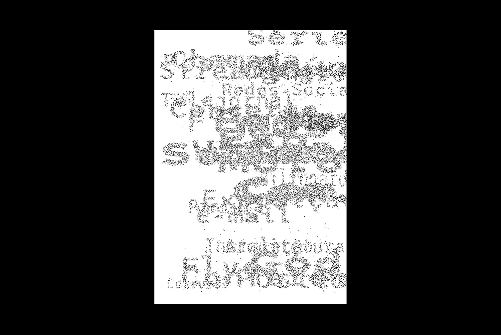
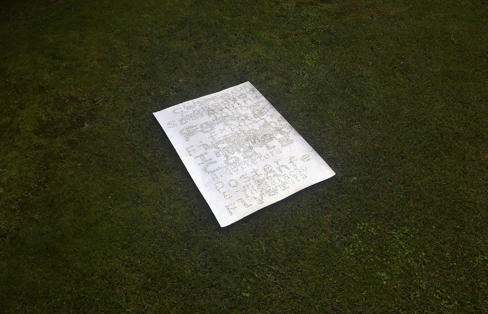
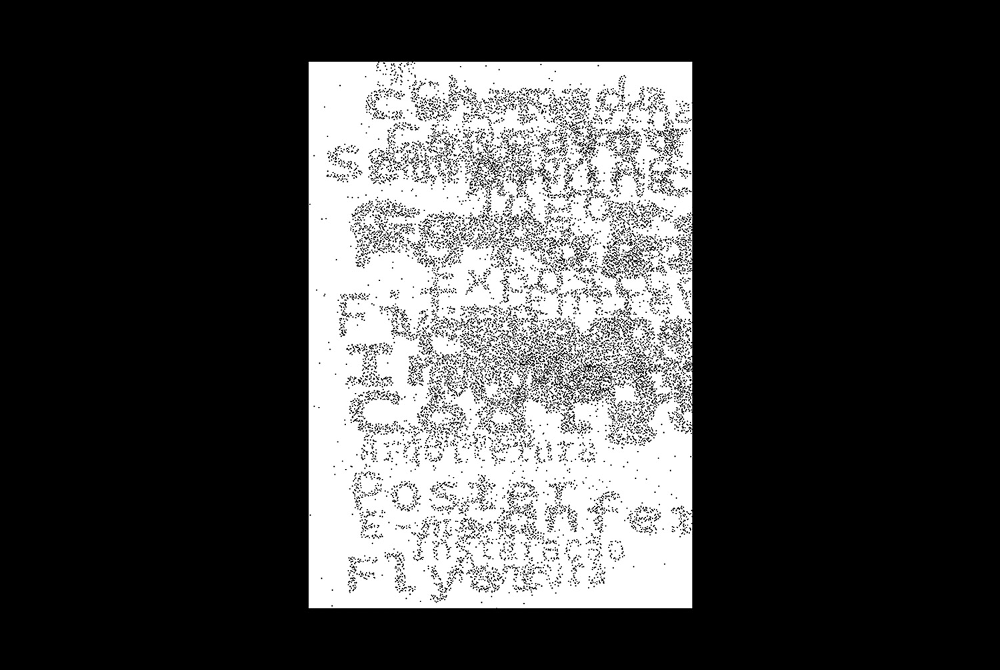
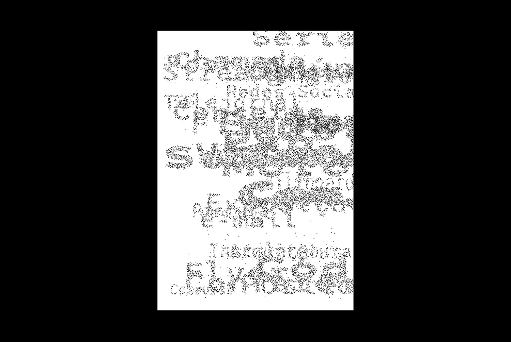